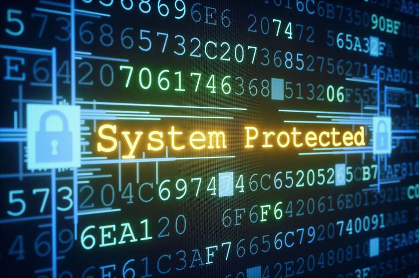

COMPUTER SECURITY
What is computer security?
Computer security, also known as cyber security or IT security, is the protection of computer systems from the theft and damage to their hardware, software or information, as well as from disruption or misdirection of the services they provide.
What are the risks of computer security?
- Internet and network attack
- Unauthorized access and use
- System failure
- Information theft
- Hardware theft
- Software theft
Why is computer security important?

Prevention measures help you stop unauthorized users (hackers) from accessing any part of your computer system. Detection helps you to determine whether or not someone attempted to break into your system, if they were successful, and what they may have done.
Cyber criminals, hackers, and identity thieves present real and dangerous threats to any online system. Your IT solution should always have adequate firewalls, antivirus software, virtual private networks, and intrusion prevention. You want to make sure that all your security components are communicating with each other, making you aware of any potential gaps or breaches in your security systems.
Despite your precautions, it is always possible that your system will be breached. This is why it is important to have an emergency action plan, a plan that is devised to shut down and protect your system in case of an attack or breach. Make sure that all pertinent personnel are aware of the plan in case you need to implement it. This plan will help contain any damage or unintended sharing of private information, allowing you to keep control of the situation.